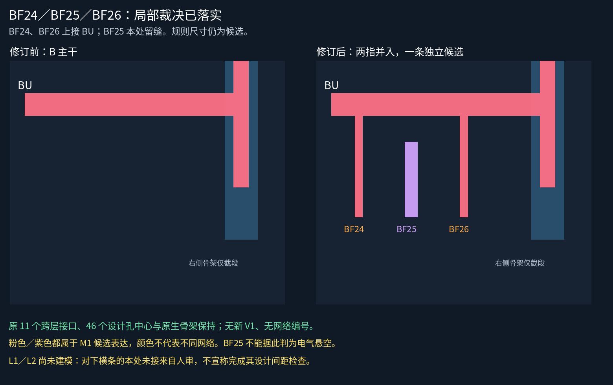
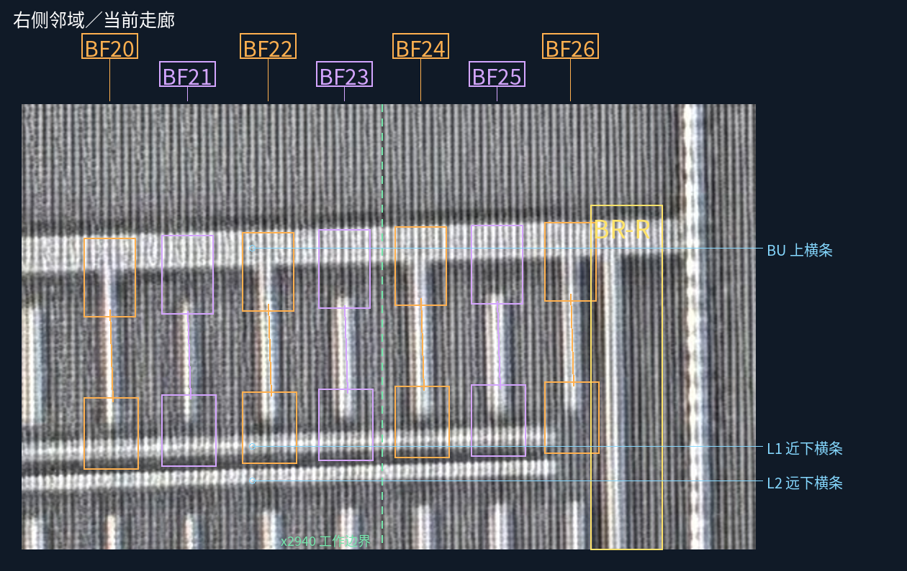

用户原话“这个局部区分正确”，仅覆盖 BF24、BF25、BF26。原始问题与送审图冻结，裁决另存覆盖记录。
五层切换工作页 · 原话及三条裁决 · 26条接续表 CSV · 原送审宽图及全清单

点击图像打开原尺寸；以下仍为原送审图，没有把新设计几何投影到照片上。

32条金属候选（原31条加BF25候选），11个既有跨层接口、46个设计孔中心保持。先局部修订两条上接指，再单独添加BF25，两个事务分别保护旧记录。BF25与已建上横条／邻指的最小设计间距为21px，沿用3px最低预算。
21px是当前候选工作几何的间距，不是真实工艺尺寸；L1/L2未建模，不能据此声称其设计间距或返回路径已通过。本处未接不代表无V1、材料确定或全局隔离。几何未采用为规范层或完整网表。
| 编号 | 原生近似x | 当前接触状态 | 工作对象 |
|---|---|---|---|
| BF01 | 1705 | AI候选，未随本次批准 | 未入工作模型 |
| BF02 | 1762 | AI候选，未随本次批准 | 未入工作模型 |
| BF03 | 1816 | AI候选，未随本次批准 | 未入工作模型 |
| BF04 | 1871 | AI候选，未随本次批准 | 未入工作模型 |
| BF05 | 1927 | AI候选，未随本次批准 | 未入工作模型 |
| BF06 | 1982 | AI候选，未随本次批准 | 未入工作模型 |
| BF07 | 2039 | AI候选，未随本次批准 | 未入工作模型 |
| BF08 | 2095 | AI候选，未随本次批准 | 未入工作模型 |
| BF09 | 2153 | AI候选，未随本次批准 | 未入工作模型 |
| BF10 | 2208 | AI候选，未随本次批准 | 未入工作模型 |
| BF11 | 2263 | AI候选，未随本次批准 | 未入工作模型 |
| BF12 | 2317 | AI候选，未随本次批准 | 未入工作模型 |
| BF13 | 2371 | AI候选，未随本次批准 | 未入工作模型 |
| BF14 | 2425 | AI候选，未随本次批准 | 未入工作模型 |
| BF15 | 2479 | AI候选，未随本次批准 | 未入工作模型 |
| BF16 | 2535 | AI候选，未随本次批准 | 未入工作模型 |
| BF17 | 2589 | AI候选，未随本次批准 | 未入工作模型 |
| BF18 | 2643 | AI候选，未随本次批准 | 未入工作模型 |
| BF19 | 2696 | AI候选，未随本次批准 | 未入工作模型 |
| BF20 | 2751 | AI候选，未随本次批准 | 未入工作模型 |
| BF21 | 2805 | AI候选，未随本次批准 | 未入工作模型 |
| BF22 | 2861 | AI候选，未随本次批准 | 未入工作模型 |
| BF23 | 2914 | AI候选，未随本次批准 | 未入工作模型 |
| BF24 | 2967 | 已审：本处上接BU | C-M1-SPINE |
| BF25 | 3020 | 已审：本处上下未直接接 | BF25-M1-CANDIDATE |
| BF26 | 3071 | 已审：本处上接BU | C-M1-SPINE |
核查 BR-R 的长返回线与 L1/L2 的本处接触，查明它们是否绕回 BU；不从短指留缝推断整条网络分离，不重问这三条已审局部接触。
PNG已目视检查；原图/清单/接续及静态资源检查见验证记录，浏览器交互未实测。